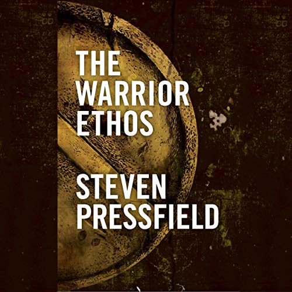

Why Did The Spruce Goose Fail?
The Biggest Plane Ever Built Flew for 26 Seconds
📜 What Happened
Howard Hughes promised the US government a fleet of giant flying boats to dodge U-boats in WWII. Wartime aluminum restrictions meant building it from wood — an engineering nightmare Hughes attacked with obsessive perfectionism, redesigning endlessly. The war ENDED with zero aircraft delivered. Hauled before a Senate committee for wasting millions, Hughes defiantly flew the colossal H-4 Hercules exactly once — 26 seconds, 70 feet up. Then he kept it in a climate-controlled hangar, maintained flight-ready by a full crew, for 29 years. It never flew again.
☠️ The Fatal Mistake
Perfectionism with no deadline discipline — polishing a solution while the problem it solved ceased to exist.
🧠 The Lesson (Free for You)
Shipped and imperfect beats perfect and irrelevant. Every project has an expiration date on its usefulness — miss it, and you're not building a solution anymore, you're building a monument.
📕 The Antidote Book

Pressfield spent 17 years failing as a writer before naming the enemy that beat him daily: Resistance — the universal, invisible, internal force that activates whenever you attempt anything that would move you from a…
📖 OPEN THE FULL INTERACTIVE BREAKDOWN →Searchable, filterable, free forever — they paid billions; your lesson is free.